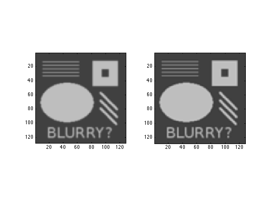

Contents
PART 1
type('readimg.m') [u] = readimg('testpat_blur2.png');
%% Code reads a square greyscale image, passes it to u
function [u] = readimg(imgstring)
u = imread(imgstring);
u = double(u) / 255;
[n,n2] = size(u);
if (n ~= n2)
error('by default, this only supports square images')
end
end
Build a discrete 2D Laplace operator
type('unsharpen.m') [u, unsharp] = unsharpen(u,10); figure(1); clf; subplot(1,2,1), imagesc(u); type('greyimg.m') greyimg(); subplot(1,2,2), imagesc(unsharp); greyimg();
%% Code creates a blurry mask, subtracts it from image u to find the difference, then adds the difference to the image in order to sharpen it. function [u unsharp] = unsharpen(u,iterations) [n,n2] = size(u); e = ones(n,1); L1 = spdiags([e -2*e e], [-1 0 1], n, n); L1(1,1) = -1; L1(end,end) = -1; I = speye(n,n); L = kron(L1, I) + kron(I, L1); v = reshape(u, n*n, 1); for i=1:iterations v = v + 0.01*(L*v); end ublur = reshape(v, n, n); edgemap = u - ublur; unsharp = u + edgemap; end %% Code formats images the way I want them function [] = greyimg() caxis([0 1]) colormap(gray) axis equal, axis tight end
Output original and result side-by-side
You could look at the resulting file with a web browser or image viewer
result = [u unsharp];
imwrite(result, 'result.png')